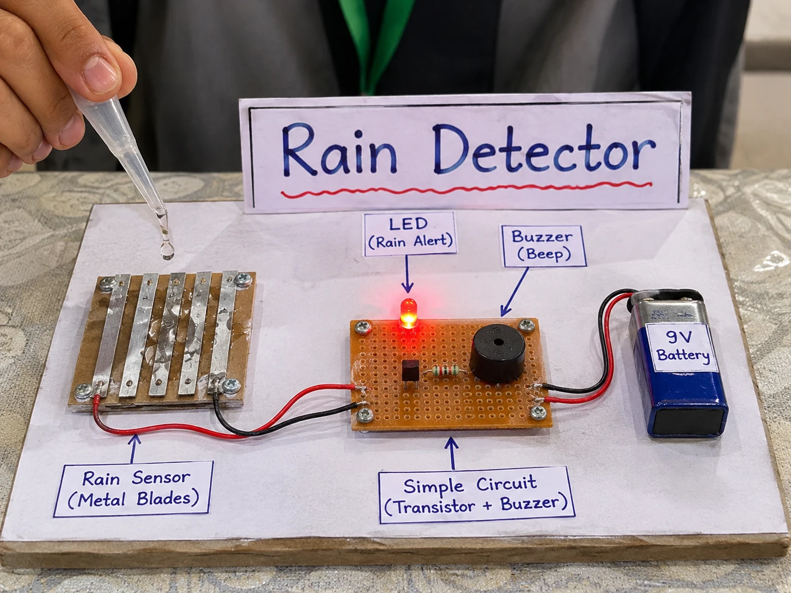
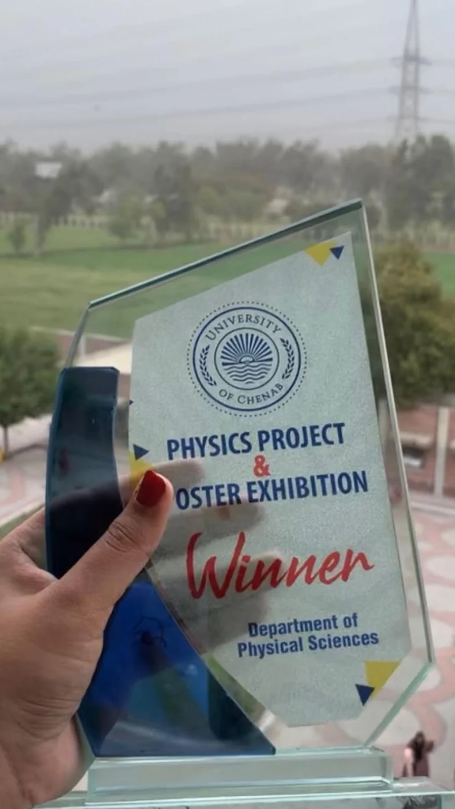

Project overview
The student-built Rain Detector used a simple water-sensing concept: when droplets bridge separated metal electrodes, the resulting change in conductivity can be detected and used to trigger an audible alert. The prototype was presented as a practical example of electronic sensing.
This was a student project. My contribution was faculty mentorship and guidance, rather than claiming the build as my own individual hardware project.
Exhibition and result
The Physics team represented the University of Chenab at the Inter-Universities Project Exhibition, organized by The Physics Forum at the University of Lahore on December 19, 2022. The university's public announcement reported 4th position among 28 participating groups.
The university announcement identifies the student team, including Syed Muhammad Hadi, Awais Sherazi, Maaz, Fatima Najam and Moniza Mahmood.
Images and documentation

